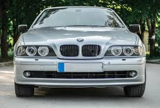
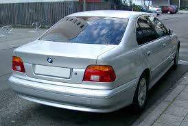
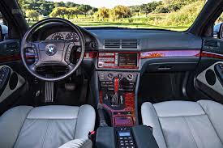

BMW E39
The fourth-generation 5 Series (1995 - 2004)



Car Specifications
- Engine Options: Inline-4, Inline-6, V8, V10 (M5)
- Power: 136 - 400 hp
- Torque: 190 - 500 Nm
- Transmission: 5-speed manual, 6-speed manual, 5-speed automatic
- Top Speed: 250 km/h (155 mph) for the M5
- 0-100 km/h: 4.8 seconds (M5)
- Fuel Economy: 8.0 - 12.5 L/100 km (29 - 19 mpg)
- Production Years: 1995 - 2004
- Body Style: Sedan, Touring (Wagon)
- Drive Type: Rear-Wheel Drive
- Weight: 1,470 - 1,800 kg
About the BMW E39
The BMW E39 is widely regarded as one of the most balanced and refined executive sedans ever produced. Known for its exceptional build quality, timeless design, and outstanding driving dynamics, the E39 set new standards in the luxury sedan market.
The E39 introduced advanced features such as multi-link rear suspension, DSC (Dynamic Stability Control), and the first V8 engine in a 5 Series sedan.
Image Gallery


Key Features
- Performance: M5 model with a 5.0L V8 engine delivering 400 hp.
- Design: Timeless, elegant design that remains iconic.
- Technology: Advanced infotainment system, stability control, and safety features.
Technical Information
The BMW E39 features robust engineering and a wide range of engine options:
Engine Codes and Iterations
- M52: Inline-6, used in 520i, 523i, and 528i.
- M54: Inline-6, used in 525i, 530i.
- M62: V8, used in 535i, 540i.
- S62: 5.0L V8, used in the M5, producing 400 hp.
Conclusion
The BMW E39 remains a benchmark for luxury sedans and is cherished by enthusiasts worldwide. Its combination of performance, comfort, and timeless design makes it one of the most iconic 5 Series models in BMW history.